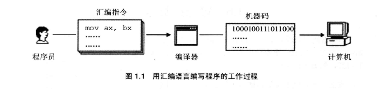
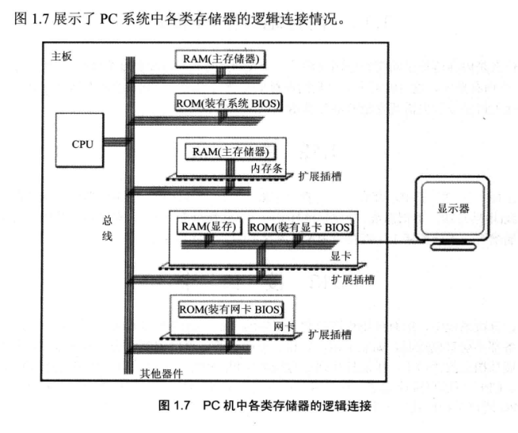
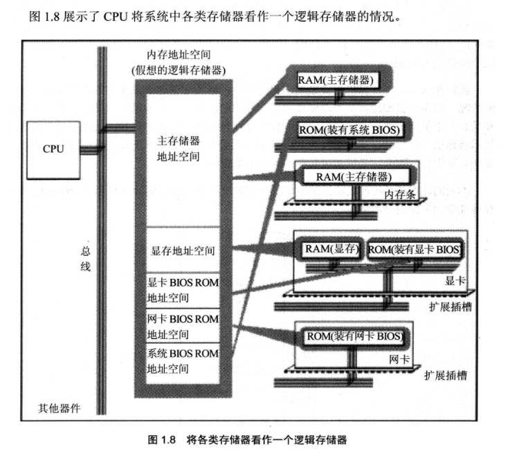

1.汇编语言是如何产生的？
由于机器语言的复杂性（难于辨别和记忆）给整个产业的发展带来了障碍，于是汇编语言产生了。
汇编语言的主体是汇编指令，汇编指令相比于机器指令显得更通俗易懂，所以汇编语言替代了机器语言进行CPU编程。
汇编程序运行过程如下：

2.汇编语言的组成
汇编语言有三类指令：
1）汇编指令：它是机器码的助记符，有对应的机器码
2）伪指令：它没有对应的机器码，有编译器执行，计算机不执行
3）其他符号：+,-,*,/等符号，没有对应的机器码，由编译器识别
可想而知，是编译器大大简化了我们对cpu的编程，让我们从复杂难懂的机器语言编程走向更加人性化的编程，所以说编译器是个好东西。
3.在汇编编程中必须理解的计算机名词
1）存储器（内存）
CPU是计算机的核心部件，它控制着整个计算机的运行并进行运算，要想让一个CPU进行工作，我们必须向它提供指令和数据。
而这个指令和数据就是在存储器中存放的（也就是我们平时理解的内存）。
我们可以这样理解：
CPU是计算机的大脑，而存储器就是计算机的记忆了，再聪明的大脑没了记忆也发挥不了作用。
很多个存储器构成了内存，一个存储器可以分为多个存储单元，一个存储单元一个字节，也就是8bit
2）指令和数据
我们要知道，指令和数据是应用上的概念。再内存或磁盘中，指令和数据没有任何区别，都是二进制信息。CPU在工作的时候把有的信息当作指令，有的信息看作数据。
3）存储单元
一个存储器可以分为多个存储单元，每个存储单元从0开始编号。 一个存储单元或内存单元中可以存储8bit，也就是1字节。
4）CPU对存储器的读写
CPU要想对器件进行数据的读写，必须和外部器件进行下面三类信息交换：
存储单元的地址（地址信息）通过地址总线传输
器件的选择，读或写的命令（控制信息） 通过控制线传输
读或写的数据（数据信息） 通过数据总线传输
5）地址总线
一个CPU有N根地址总线，这个CPU的地址总线的宽度为N，这样的CPU最多可以寻找2的N次方个存储单元，所以地址总线的作用就是用于寻找存储单元的。
6）数据总线
8根数据总线可以一次传送8bit数据，16根可以一次传输16bit数据，N根可以一次传送 N bit数据。
7）控制总线
控制总线的宽度决定了CPU对外部器件的控制能力。
8）内存地址空间
什么是内存地址空间呢？
假设一个CPU的地址总线的宽度为10，那么可以寻址1024个内存单元，这1024个可寻到的内存单元就构成这个CPU的内存地址空间。
9）主板
在每一台pc机中，都有一个主板，主板上都有核心器件和一些主要器件，这些器件通过总线（地址总线，数据总线，控制总线）相连。
这些器件有CPU，存储器，外围芯片组，扩展插槽等等，扩展插槽上一般插有RAM内存条和各类接口卡。
10）接口卡
在计算机系统中，所有可用程序想要控制其工作的设备，必须由CPU进行控制。
CPU对外部设备不能直接控制，比如显示器，音响，打印机等，直接控制这些外设的是插在扩展插槽的接口卡。
扩展插槽通过总线和CPU相连，所以接口卡也通过总线同CPU相连，CPU可以通过控制这些接口卡从而实现CPU对外设的间接控制。
简单来说，就是CPU通过总线向接口卡发送命令，然后接口卡将CPU的命令转换成外设的工作命令从而控制外设。
11）各类存储器芯片
在一台PC机中，装有多个存储器芯片，这些芯片从物理连接上看是独立的，不同的器件。
从读写属性上来看存储器分为两类：随机存储器（RAM）和只读存储器（ROM）。随机存储器可读可写，只读存储器只可读不可写。
其中，随机存储器必须带电存储，关机后存储的内容丢失。只读存储器关机后内容不丢失。

12）内存地址空间
上述存储器在物理上是独立的器件，但是在以下两点是相同的：
都和CPU的总线相连
CPU对他们进行读写的时候都通过控制线发出内存读写命令。
也就是说，CPU在操控他们的时候把他们都当作内存看待，把他们总的看作一个由若干个存储单元组成的逻辑存储器。

在上图中所有的物理存储器被看作一个由若干个存储单元组成的逻辑存储器，每个物理存储器在这个逻辑存储器中占有一段地址空间，
CPU在这段地址空间中读写数据实际上就是在相对应的物理存储器中读写数据。